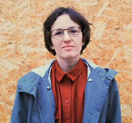

KATE PRAVASUD

Objective: Junior Front-End Developer
pravosud@gmail.com
+375291056041
Passionate for learning and eager to start a career in the field of front-end development. My main goals are: build strong communication with my team members, work together to achieve company’s goals and provide quality results in time
Hard skills:
Java Script, HTML, CSS, Adobe Photoshop, WordPress
Soft skills:
Punctuality, self-discipline, creative approach, flexibility
Education:
- Dutch Delta University, Deventer, Netherlands: Bachelor of Business Administration
- Marbella Design Academy, Marbella, Spain: Graphic/Fashion Design
- Online learning: BangBangEducation ‘Modern Web’, ‘Programming language: what is it?’, lynda.com ‘JS Basics’
Languages:
English B1
Spanish A2
Interests:
Photohgraphy, Graphic Design, Reading (fantasy, modern novels), Art